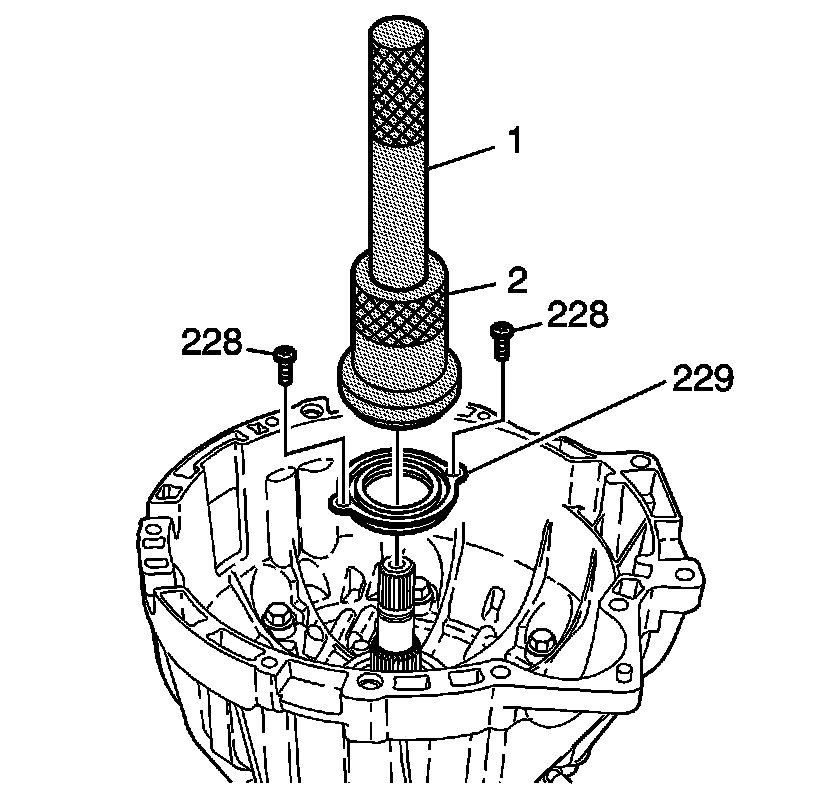

Torque Converter Seal Installation
Torque Converter Seal Installation
Tools Required
* J 8092 Universal Driver Handle
* J 44766 Seal Installer

1. Assemble J 8092 onto J 44766 .
Notice: Install the seal onto the installation tool before installing into the case to prevent damage to the seal.
2. Install the seal (229) onto J 44766 .
Important: Align the torque converter seal with the bolt holes.
3. Install the NEW seal (229) into the housing.
Notice: Refer to Fastener Notice .
4. Install the NEW seal bolts (228).
Tighten the seal bolts to 3.6 N.m (31.86 lb in).
5. Install the NEW input shaft seal (430).